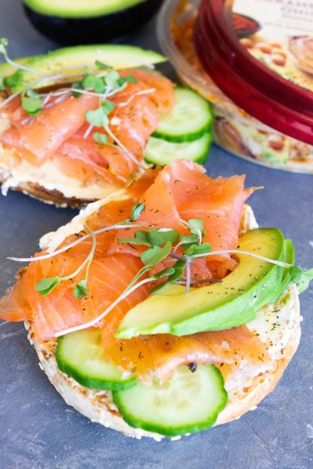
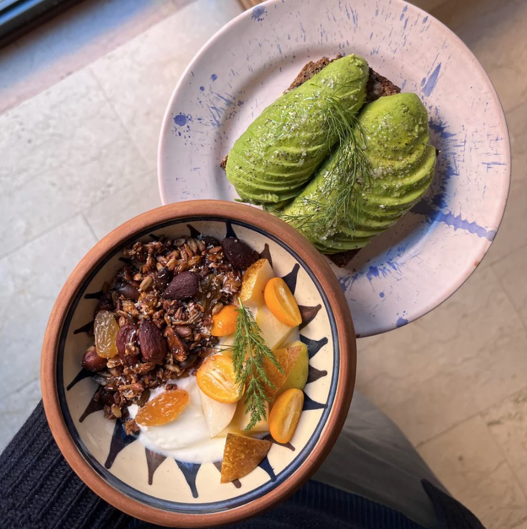
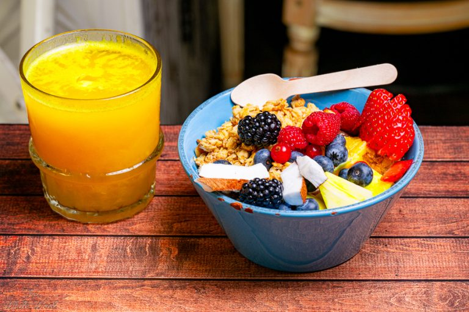

Looking for the perfect weekend escape? Here are the best brunch spots in Rome for you to enjoy with friends!

Mammo is a cozy brunch spot located in the heart of Rome's Trastevere neighborhood. Known for its laid-back vibe and modern aesthetic, Mammo offers a variety of options, from classic eggs benedict to fresh smoothie bowls. Their avocado toast is a must-try, served on thick slices of sourdough with perfectly ripened avocados, a drizzle of olive oil, and chili flakes for an extra kick. Whether you’re craving a light breakfast or a hearty brunch, Mammo has something to satisfy all tastes.

Nestled in Rome’s Ostiense district, Marigold is a chic café and bakery that prides itself on organic and locally sourced ingredients. Their weekend brunch is especially popular among locals and tourists alike, with dishes ranging from ricotta pancakes to scrambled eggs on artisanal sourdough bread. The café also serves freshly baked pastries and an assortment of house-made jams. Don’t miss their cappuccino, made with ethically sourced beans roasted in-house.

A true hidden gem, Buddy is situated near the Vatican and offers a brunch menu that balances traditional Italian flavors with international brunch classics. From their frittata loaded with seasonal veggies to their decadent French toast drizzled in maple syrup, Buddy makes every meal feel like a special occasion. The café’s charming interior and outdoor seating make it the perfect spot to relax and enjoy a leisurely brunch after a morning of sightseeing.